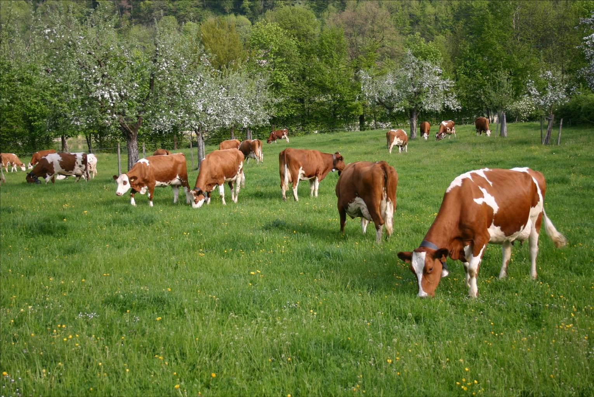
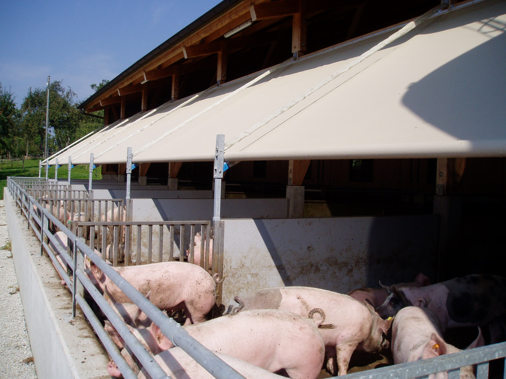

Agrammon berechnet, wo auf einem Betrieb Ammoniak verloren geht — und wie sich Änderungen in Struktur und Produktionstechnik auswirken.

Berechnet die Ammoniakemissionen eines einzelnen Betriebs aus Parametern, die der Landwirtin ohne Aufwand bekannt sind.
Starten →Aggregiert regionale Tierzahlen und Produktionstechnik — gleicher Algorithmus, regionaler Massstab.
Starten →Für den kantonalen Vollzug, etwa zur Beurteilung von Baugesuchen, mit zusätzlichen Minderungsmassnahmen.
Starten →
Verschmutzte Laufflächen und Harn-Kot-Kontakt bestimmen die Verluste.
Emissionsfaktor pro m² Lageroberfläche; Abdeckung senkt den Verlust.
Schleppschlauch, Witterung und Tageszeit verändern die Rate deutlich.
Reststickstoff sowie Boden- und Pflanzenprozesse je Hektar Fläche.
Alle Variablen, Referenzen und Formeln sind in der Technischen Modellbeschreibung und vollständig auf GitHub dokumentiert.